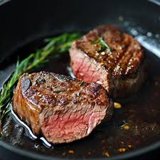

Steak

Description
A steak recipe. Simple and tasty.
Back to main
Ingredients:
- Strip steak
- Salt
- Pepper
- Oil
- Butter
- Rosemary sprigs
- Garlic cloves
Steps:
- Pat the steak dry
- Sprinkle both sides liberally with salt and pepper.
- Preheat the pan on medium and brush with oil. Using just 1/2 Tbsp oil reduces splatter.
- Add steak and sear each side 3-4 minutes until a brown crust has formed then use tongs to turn steaks on their sides and sear edges (1 min per edge)
- Melt in butter with quartered garlic cloves and rosemary sprigs.
- Remove steak and rest 10 minutes before slicing against the grain, then serve